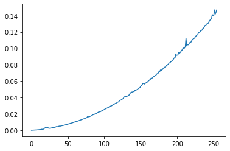

Contenidos | Anterior (2 Ordenamientos sencillos de listas) | Próximo (4 Algoritmos de clasificación supervisada)
12.3 Divide y reinarás
Para esta sección tenemos este video introductorio.
El problema del ordenamiento es un problema fundamental y hay muchísimos algoritmos que lo resuelven. Los métodos de ordenamiento vistos en la sección anterior eran métodos iterativos cuyo tiempo de ejecución era cuadrático.
Veremos ahora el merge sort que es un algoritmo un poco más complejo conceptualmente pero menos complejo computacionalmente. El algoritmo está basado en una idea muy fecunda en el diseño de algoritmos eficientes que se denomina divide y reinarás (ó divide and conquer en inglés).
Divide y reinarás es un paradigma de diseño de algoritmos recursivos que trabaja partiendo (dividiendo) el problema original en subproblemas del mismo tipo pero más sencillos de resolver. Las soluciones de estos subproblemas luego se combinan para obtener una solución del problema original.
La correctitud de los algoritmos de este tipo suele probarse utilizando la inducción matemática y el cálculo de su complejidad involucra la resolución de ecuaciones de recurrencia cuyos detalles escapan el alcance de este curso.
El algoritmo merge sort (u ordenamiento por mezcla)

El merge sort se basa en la siguiente idea:
- Si la lista es pequeña (vacía o de tamaño 1) ya está ordenada y no hay nada que hacer. De lo contrario hacer lo siguiente:
- Dividir la lista al medio, formando dos sublistas de (aproximadamente) el mismo tamaño cada una.
- Ordenar cada una de esas dos sublistas (usando este mismo método).
- Una vez que se ordenaron ambas sublistas, intercalarlas (mergearlas) de manera ordenada.
Por ejemplo, si la lista original es [6, 7, -1, 0, 5, 2, 3, 8]
deberemos ordenar recursivamente [6, 7, -1, 0] y
[5, 2, 3, 8] con lo cual obtendremos [-1, 0, 6, 7] y
[2, 3, 5, 8]. Si intercalamos ordenadamente las dos listas
ordenadas obtenemos la solución buscada:
[-1, 0, 2, 3, 5, 6, 7, 8].
Veamos otro ejemplo con un gif animado:

Diseñemos la función merge_sort(lista):
- Si lista es pequeña (vacía o de tamaño 1) ya está ordenada y no hay nada que hacer. Se devuelve lista original.
- De lo contrario:
medio = len(lista) // 2izq = merge_sort(lista[:medio])der = merge_sort(lista[medio:])- Se devuelve
merge(izq, der).
Falta sólo diseñar la función merge: dadas dos listas ordenadas
debe obtener una nueva lista que resulte de intercalar a ambas de manera
ordenada:
- Utilizaremos dos índices,
iyj, para recorrer cada una de las dos listas. -
Utilizaremos una tercera lista,
resultado, donde almacenaremos el resultado. -
Mientras
isea menor que el largo delista1yjmenor que el largo delista2, significa que hay elementos para comparar en ambas listas. -
Si el menor es el de
lista1: - Agregar el elemento
lista1[i]al final de la listaresultado. - Incrementar el índice
i. - de lo contrario:
- Agregar el elemento
lista2[j]al final de la listaresultado. -
Incrementar el índice
j. -
Una vez que una de las dos listas se termina, simplemente hay que agregar todo lo que queda en la otra al final de la lista
resultado.
El código resultante del diseño de ambas funciones puede verse a continuación:
import random
def merge_sort(lista):
"""Ordena lista mediante el método merge sort.
Pre: lista debe contener elementos comparables.
Devuelve: una nueva lista ordenada."""
if len(lista) < 2:
lista_nueva = lista
else:
medio = len(lista) // 2
izq = merge_sort(lista[:medio])
der = merge_sort(lista[medio:])
lista_nueva = merge(izq, der)
return lista_nueva
def merge(lista1, lista2):
"""Intercala los elementos de lista1 y lista2 de forma ordenada.
Pre: lista1 y lista2 deben estar ordenadas.
Devuelve: una lista con los elementos de lista1 y lista2."""
i, j = 0, 0
resultado = []
while(i < len(lista1) and j < len(lista2)):
if (lista1[i] < lista2[j]):
resultado.append(lista1[i])
i += 1
else:
resultado.append(lista2[j])
j += 1
# Agregar lo que falta de una lista
resultado += lista1[i:]
resultado += lista2[j:]
return resultado
El método divide y reinarás que hemos usado para resolver el problema de ordenar una lista puede aplicarse también en otras situaciones. Hace falta que sea posible resolver el problema partiéndolo en varios subproblemas de tamaño menor, resolver cada uno de esos subproblemas por separado aplicando la misma técnica (en nuestro caso ordenar por mezcla cada una de las dos sublistas), y finalmente juntar estas soluciones parciales en una solución completa del problema mayor (en nuestro caso la intercalación ordenada de las dos sublistas ordenadas).
Como siempre sucede con las soluciones recursivas, debemos encontrar un caso base en el cual no se aplica la llamada recursiva (en nuestro caso: si la lista tiene largo cero o uno, ya está ordenada y no hay nada que hacer). Además debemos asegurar que siempre se alcanza el caso base, y en nuestro caso aseguramos eso porque, si no estamos en el caso base, la lista se divide en mitades decrementando su longitud.
El método divide y reinarás es fecundo y ha dado lugar a algoritmos muy eficientes para tareas muy disímiles como multiplicar matrices, calcular la transformada de Fourier o realizar análisis sintácticos (parsear).
Ejemplo: Árbol de recursión
Para representar gráficamente las llamadas recursivas de la función merge_sort() podemos hacer un árbol similar al que mostramos en la
Sección 11.2 para la sucesión de Fibonacci. Esta vez, como queremos mostrar no sólo las llamadas sino también lo que devuelve cada llamada, espejaremos el árbol obteniendo un grafo.
Acá mostramos el árbol de recursión de merge_sort([3, 1, 0, 4, 2]).

¿Cuánto cuesta el Merge sort?
Supongamos que tenemos que ordenar una lista de l longitud N . Observamos lo siguiente:
-
Para intercalar dos listas de longitud
N/2hace falta recorrer ambas listas que en total tienenNelementos. La cantidad de operaciones resulta proporcional aN. Llamemosa * Na ese tiempo. -
Si llamamos
T(N)al tiempo que tarda el algoritmo en ordenar una lista de longitudN, vemos queT(N) = 2 * T(N/2) + a * N. -
Además, cuando la lista es pequeña, la operación es de tiempo constante:
T(1) = T(0) = b.
Para simplificar la cuenta vamos a suponer que N = 2^k.
T(N) = T(2^k) = 2 * T(2^(k-1)) + a * 2^k
= 2 * ( 2 * T(2^(k-2)) + a * 2^(k-1)) + a * 2^k
= 2^2 * T(2^(k-2)) + a * 2^k +a * 2^k
.
.
.
= 2^i * T(2^(k-i))+ i * a * 2^k
.
.
.
= 2^k * T(1) + k * a * 2^k
= b * 2^k + k * a * 2^k
Pero si N = 2^k entonces k = log2(N), y por lo tanto hemos demostrado
que:
T(N) = b * N + a * N * log2(N).
Como lo que nos interesa es aproximar el valor, diremos (despreciando el término de menor orden) que
T(N) ~ N * log2(N)
Dado que log2(N) es un número mucho más pequeño que N, hemos mostrado entonces que el merge sort se porta mucho mejor (es decir, es más eficiente) que los tres métodos de ordenamiento que discutimos en la sección anterior (que eran cuadráticos).
Si analizamos el espacio que consume, vemos que a cada paso la función merge
genera una nueva lista cuya longitud es la suma de los tamaños de las dos
listas, por lo que merge_sort usa el doble de espacio que la lista de entrada.
Resumen
-
Los métodos de ordenamiento de selección, inserción y burbujeo presentados en la sección anterior son métodos conceptualmente sencillos pero costosos en cantidad de operaciones (intercambios y/o comparaciones). Sin embargo, es posible conseguir métodos más eficientes usando algoritmos recursivos.
-
El algoritmo merge sort consiste en dividir la lista a ordenar hasta que tenga 1 ó 0 elementos y luego combinar la lista de forma ordenada. De esta manera se logra un tiempo proporcional a
N * log2(N).
Ejercicios:
Ejercicio 12.6:
Ordená la lista [6, 0, 3, 2, 5, 7, 4, 1] usando el método merge sort. Dibujá el árbol de recursión explicando las llamadas que se hacen en cada paso, y el orden en el que se realizan, como mostramos más arriba para la lista [3, 1, 0, 4, 2].
Ejercicio 12.7:
Modificá la función merge_sort para que también devuelva la cantidad de comparaciones hechas. Rehacé el último ejercicio de la sección anterior (Ejercicio 12.5) incorporando el merge sort a la comparación y al gráfico. Describí con tus palabras qué observas.
Guardá el archivo comparaciones_ordenamiento.py con estas modificaciones, para entregarlo.
El módulo timeit
Hay casos en que contar la cantidad de operaciones que un algoritmo realiza se vuelve muy engorroso. Una alternativa simple aunque menos exacta es medir su tiempo de ejecución para problemas de distintos tamaños y estimar el orden del algoritmo a partir del cambio en el tiempo de ejecución al cambiar el tamaño del problema.
Existe un módulo llamado timeit que permite medir tiempos de ejecución de código Python.
El comando timeit() del modulo timeit devuelve, en segundos, el tiempo de ejecución total para el comando y número de repeticiones especificadas. El código a ejecutar y la cantidad de ejecuciones se pasan como parámetros. En esta sección, vamos a usarlo para comparar algoritmos de ordenamiento.
En el siguiente ejemplo se le pide a Python una demora de 1 segundo (sleep(1)) y se le pide a timeit() que devuelva el tiempo de ejecución de ese comando, ejecutado una sola vez). Probálo varias veces:
In [1]: import time
In [2]: import timeit as tt
In [3]: tt.timeit('time.sleep(1)',number = 1)
Out[3]: 1.0010360410087742
Notarás que el tiempo de ejecución está muy cerca del esperado (1 segundo), pero no es exactamente ese valor y además hay cierta variacion entre repeticiones.
Ahora evaluemos la siguiente expresión, que concatena en un string los primeros 100 números enteros. Ejecutala por lo menos diez veces y mirá como varía la salida:
In [4]: tt.timeit('"-".join(str(n) for n in range(100))', number = 1)
Out[4]: 6.670000296551734e-05
Si medimos un proceso que tarda poco tiempo como en el último ejemplo, obtendremos resultados con una variabilidad de magnitud similar a la duración del proceso. Si queremos comparar duraciones relativas es mejor medir procesos largos o, si se trata de un proceso corto, repetirlo muchas veces. Usando timeit() podemos hacer esto cambiando el parametro number.
Probá lo siguiente:
In [5]: tt.timeit('"-".join(str(n) for n in range(100))', number = 10000)
Out[5]: 0.3018611848820001
Ahora comparemos la duración de ese código python con la duración de otras expresiones que dan el mismo resultado. Ejecutá cada una varias veces:
In [6]: tt.timeit('"-".join(str(n) for n in range(100))', number = 10000)
Out[6]: 0.3018611848820001
In [7]: tt.timeit('"-".join([str(n) for n in range(100)])', number = 10000)
Out[7]: 0.2727368790656328
In [8]: tt.timeit('"-".join(map(str, range(100)))', number = 10000)
Out[8]: 0.23702679807320237
Ejemplo: evaluar el método de ordenamiento por selección con timeit.
Queremos evaluar cuánto tarda del método de ordenamiento por selección para diferentes longitudes de la lista a ordenar.
Para eso, primero generamos listas de longitudes entre 1 y 256.
listas = []
for N in range(1, 256):
listas.append(generar_lista(N))
Luego, definimos una función "wrapper""(envoltorio) llamada experimento_timeit_seleccion(listas, num) que realiza un experimento usando timeit para evaluar el método de selección (repitiendo num veces) con las listas que le pasamos como parámetro, y devuelve en un vector los tiempos de ejecución para cada lista.
def experimento_timeit_seleccion(listas, num):
"""
Realiza un experimento usando timeit para evaluar el método
de selección para ordenamiento de listas
con las listas pasadas como entrada
y devuelve los tiempos de ejecución para cada lista
en un vector.
El parámetro 'listas' debe ser una lista de listas.
El parámetro 'num' indica el número de veces que repite el ordenamiento para cada lista.
"""
tiempos_seleccion = []
global lista
for lista in listas:
# evalúo el método de selección
# en una copia nueva para cada iteración
tiempo_seleccion = tt.timeit('ord_seleccion(lista.copy())', number = num, globals = globals())
# guardo el resultado
tiempos_seleccion.append(tiempo_seleccion)
# paso los tiempos a arrays
tiempos_seleccion = np.array(tiempos_seleccion)
return tiempos_seleccion
El parámetro globals = globals() permite a timeit() acceder a las variables y funciones definidas en el namespace global en que se está ejecutando. El comando global lista hace que la variable lista que va recorriendo la lista de listas, sea global y por lo tanto accesible a timeit().
Y ahora realizamos el experimento y lo graficamos.
tiempos_seleccion = experimento_timeit_seleccion(listas, 100)
plt.plot(tiempos_seleccion)

Ejercicio 12.8:
La idea de este ejercicio es, nuevamente, comparar los algoritmos de ordenamiento que vimos hasta ahora pero usando timeit() en lugar de contando a mano la cantidad de operaciones.
-
Juntá en el archivo
time_ordenamiento.pylos métodos de búsqueda del Ejercicio 12.7. -
Antes de empezar el experimento, eliminá de las funciones a medir todo código no esencial, en particular los prints para debug. Consumen tiempo y no son parte del algoritmo. También eliminá las cuentas de comparaciones, que ahora no son necesarias.
-
Escribí un experimento que, tal como hiciste en el Ejercicio 12.5, para
Nentre 1 y 256 genere una lista de largoNcon números enteros del 1 al 1000, calcule el tiempo que tarda cada método en ordenar la lista y guarde estos resultados en vectores de largo 256. -
En este caso, vas a tener que generar y guardar todas las listas a ser utilizadas antes de correr el experimento, para poder usar las mismas repetidas veces al evaluar cada método. Definí para eso una función
generar_listas(Nmax)que genere una lista de listas, una de cada longitud entre 1 yNmax, con valores aleatorios entre 1 y 1000. -
Asegurate de evaluar todos los métodos de ordenamiento con las mismas listas (siempre usá copias para no ordenar listas que ya están ordenadas) y guardar esta información para poder mostrarla o usarla.
-
Graficá los datos de tiempos de ejecución en función de las longitudes de las listas. ¿Coinciden las curvas con lo que habías predicho estimando el número de operaciones?
-
Guardá el archivo
time_ordenamiento.pypara entregarlo.
Ejercicio 12.9:
Opcional: Escribí una función merge3sort que funcione igual que el merge sort pero en lugar de dividir la lista de entrada en dos partes, la divida en tres partes. Deberás escribir la función merge3(lista1, lista2, lista3).
Probá tu función en las siguientes listas:
unalista = [1, 4, 3, 1, 7, 5]
otralista = [7, 6, 5, 4, 3, 2, 1, 0]
¿Cómo te parece que se va a comportar este método con respecto al merge sort original? Agregá este nuevo método a la comparación del ejercicio anterior.
Contenidos | Anterior (2 Ordenamientos sencillos de listas) | Próximo (4 Algoritmos de clasificación supervisada)